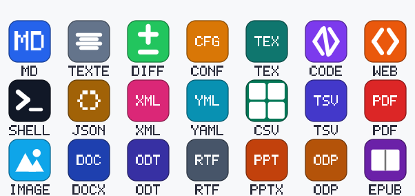

01 / LIRE
Lire, sans friction.
Markdown, code, tableaux, PDF, images, présentations, documents et livres numériques : un lecteur adapté à chaque format, sans exécuter les scripts des fichiers.
Lecture locale
Noto rassemble la lecture, l’édition et le traitement de vos documents dans une application claire, rapide et locale. Vous gardez la main sur vos fichiers, du premier clic au résultat final.
Gardez l’essentiel sous la main. Noto transforme vos fichiers en un espace de travail cohérent — sans déplacer les originaux.
Lisez un PDF, relisez une note ou ajustez un extrait de code. Vos onglets et vos groupes gardent vos documents à portée de main.
Noto n’est pas une visionneuse de plus. C’est un bureau documentaire calme, pensé pour ouvrir, comprendre et agir — sans changer vos habitudes ni prendre vos données en otage.
Markdown, code, tableaux, PDF, images, présentations, documents et livres numériques : un lecteur adapté à chaque format, sans exécuter les scripts des fichiers.
Éditez texte, Markdown, code, HTML et CSV avec coloration syntaxique, recherche et remplacement, enregistrement maîtrisé et brouillons locaux facultatifs.
L’atelier réunit 55 opérations concrètes pour PDF, images, OCR, tableaux, archives et documents bureautiques. Chaque opération annonce ses limites, affiche une progression réelle et fournit les mesures ou rapports disponibles.
Une fenêtre pour lire, organiser, comparer, imprimer et traiter vos fichiers. Les visuels ci-dessous présentent les écrans et les icônes de Noto.

À noter Les aperçus de l’interface sont des illustrations de présentation, pas des captures d’écran certifiées du binaire. La planche d’icônes est, elle, issue des ressources réelles du dépôt. Des captures Windows pourront remplacer ces aperçus lors d’une prochaine validation sur poste.
Fusion, découpe et réorganisation de PDF. Conversion et retouche d’images. OCR local après accord. Nettoyage de scans, tableaux, archives protégées et documents bureautiques : chaque opération précise ses limites avant d’agir.
Explorer les 55 opérations ↗Une prise en charge précise, avec ses limites explicites. Noto préfère vous dire ce qu’il sait faire plutôt que prétendre tout ouvrir.
TXT, Markdown, HTML, JSON, YAML, TOML et plus de trente langages colorés.
Sommaire, signets, miniatures, recherche, impression réelle et mesures utiles.
CSV et TSV affichés en tableau, avec détection du séparateur et comptage.
Formats d’image courants, PPTX et ODP rendus localement en aperçu simplifié.
DOCX, ODT, RTF et EPUB : lecture locale du texte, sans altérer les originaux.
Récents, groupes, recherche ponctuelle ou index local à la demande, et comparaison côte à côte de texte.
Noto ouvre et traite les fichiers sur votre appareil. Il n’y a ni compte, ni synchronisation distante, ni télémétrie. Les groupes, préférences et historiques restent stockés localement.
Noto est distribué sous la forme d’un installeur Windows x64 en français. Installation par utilisateur : pas besoin de droits administrateur.
Si un certificat de signature Windows n’est pas configuré, SmartScreen peut afficher un avertissement d’éditeur inconnu. Vérifiez les sommes SHA-256 avant d’installer.
Ce que Noto fait, ce qu’il ne fait pas et comment rester maître de vos documents.
Toute la documentation ↗Oui. Noto est gratuit, open source et distribué sous licence MIT. Il n’existe pas de formule payante, de compte à créer ni d’abonnement.
La lecture, l’édition, la recherche et les traitements de documents restent sur votre appareil. Le premier téléchargement des données OCR est proposé après votre accord. Noto consulte uniquement les métadonnées publiques de la dernière release stable GitHub ; aucun document, nom de fichier ni chemin n’est transmis. Le téléchargement commence seulement après votre accord, puis la signature Tauri est vérifiée avant l’installation.
Texte, Markdown, plus de trente langages de code, CSV/TSV, PDF, images, présentations PPTX/ODP, documents DOCX/ODT/RTF et livres EPUB. Certaines présentations et conversions sont reconstruites : Noto documente précisément les limites.
Non. Elle ne démarre qu’après le choix explicite d’un dossier et conserve l’index sur l’appareil. Celui-ci contient des chemins et des termes recherchables, pas le document complet ; vous pouvez l’effacer dans les paramètres. La recherche de contenu porte sur les 16 000 premiers caractères de chaque fichier.
Pas encore. L’accueil, la navigation, les fichiers récents et les paramètres ont une première traduction. Les lecteurs, les menus contextuels et l’atelier restent encore partiellement ou majoritairement en français.
Noto vérifie discrètement au démarrage si une version stable est disponible, mais ne télécharge et n’installe rien sans votre accord. La signature Tauri est contrôlée avant l’installation. Les versions antérieures à la 1.2.0 ne contiennent pas l’updater et doivent être mises à jour manuellement une première fois ; si un ancien client ne parvient pas à contacter GitHub, l’installeur officiel reste disponible sur cette page.
La signature Authenticode dépend de la configuration du certificat de publication. Si aucun certificat n’est configuré, Windows peut signaler un éditeur inconnu. Consultez les notes de la release et vérifiez SHA-256 ; aucune signature n’est revendiquée sans preuve.
La distribution publique actuelle cible Windows 10 et Windows 11 en 64 bits. Le dépôt est open source, mais aucun installeur macOS ou Linux n’est publié à ce jour.
Utilisez les Issues GitHub. Pour une vulnérabilité, utilisez le signalement privé indiqué dans la politique de sécurité.
Un espace documentaire à votre mesure. Gratuit, local, sans détour.